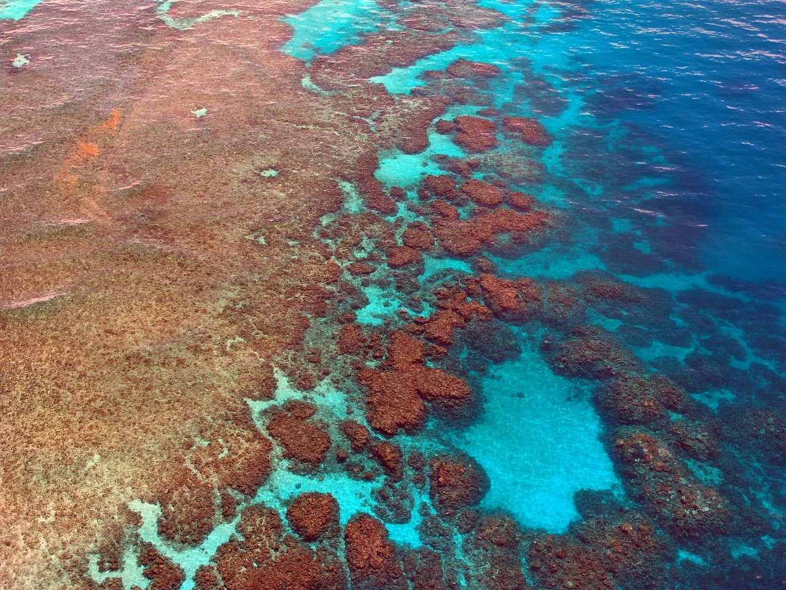
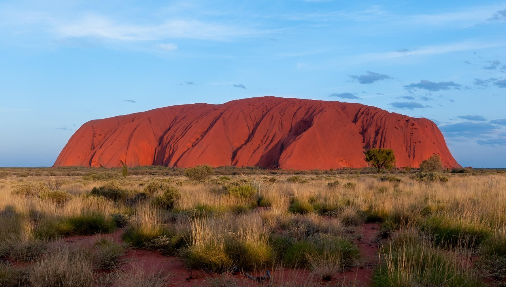
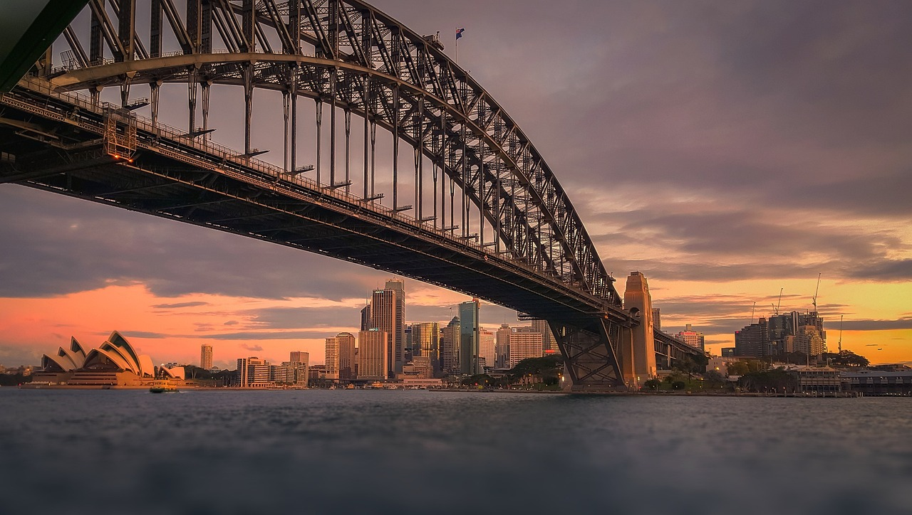
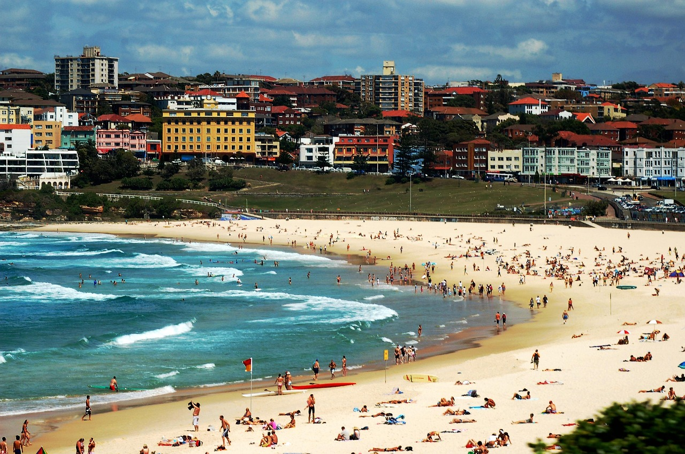
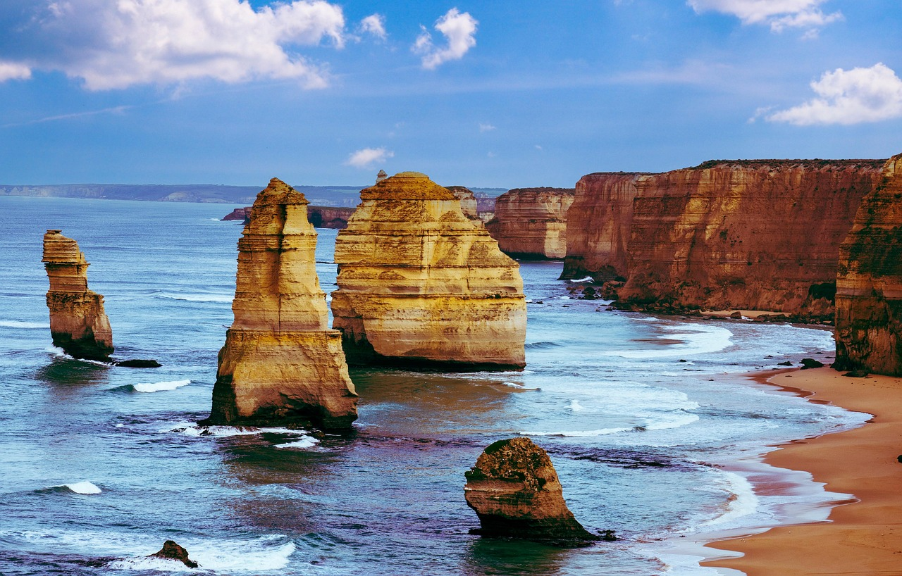
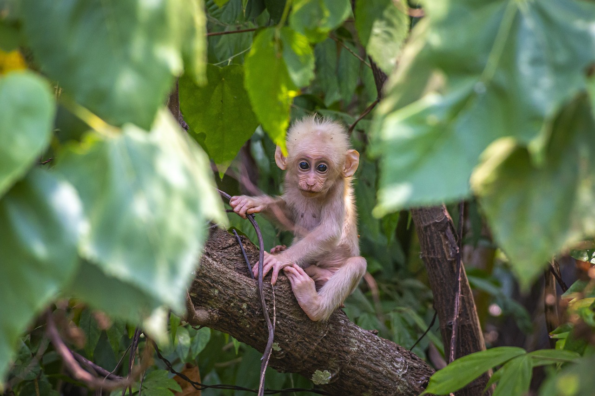
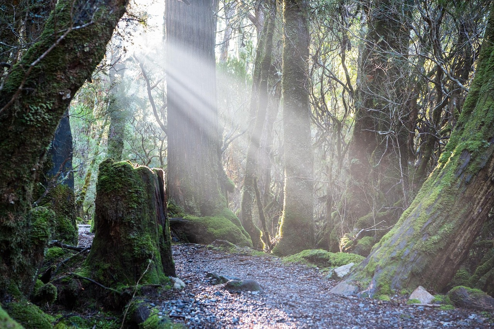

Famous Places in Australia

Sydney Opera House
Located on Bennelong Point in Sydney Harbour, the Sydney Opera House is one of the world’s most recognizable buildings. Completed in 1973, its unique sail-like design was created by Danish architect Jørn Utzon. It hosts over 1,500 performances a year.

Great Barrier Reef
Stretching over 2,300 kilometers along Australia’s northeast coast, the Great Barrier Reef is the planet’s largest coral reef system. It supports incredible marine life including over 1,500 species of fish. Popular activities include scuba diving and snorkeling.

Uluru (Ayers Rock)
Situated in the Northern Territory, Uluru is a massive sandstone monolith. It holds deep spiritual significance for the Anangu Aboriginal people. Uluru is famous for its color changes at sunrise and sunset.

Sydney Harbour Bridge
Known as the “Coathanger”, this steel arch bridge links Sydney’s CBD and North Shore. Built in 1932, it's one of the largest steel arch bridges globally. The BridgeClimb offers unforgettable panoramic views.

Bondi Beach
Just 7 kilometers from Sydney’s city center, Bondi Beach is a world-famous destination for surfers and sun-lovers. It offers golden sands, coastal walks, and a laid-back vibe. Events like Sculpture by the Sea add cultural flair.

The Great Ocean Road
A scenic coastal drive stretching 243 kilometers along Victoria’s southern coast. Highlights include the Twelve Apostles, Loch Ard Gorge, and seaside towns. It’s a must-see for road trippers and nature lovers alike.

Daintree Rainforest
The Daintree Rainforest in Queensland is over 135 million years old. This UNESCO-listed rainforest shelters unique plants, birds, and reptiles. Visitors enjoy boardwalks, crocodile cruises, and cultural tours.

Tasmania’s Wilderness
Tasmania is home to vast wilderness areas, including mountains, lakes, and dense forests. Popular spots include Cradle Mountain, Freycinet, and the Tasman Peninsula. The island is perfect for hiking and photography.